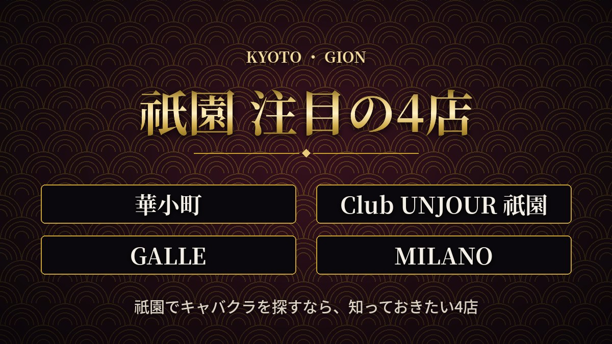
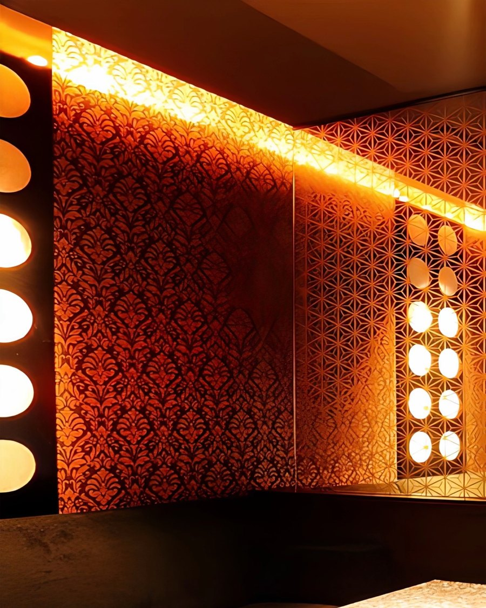
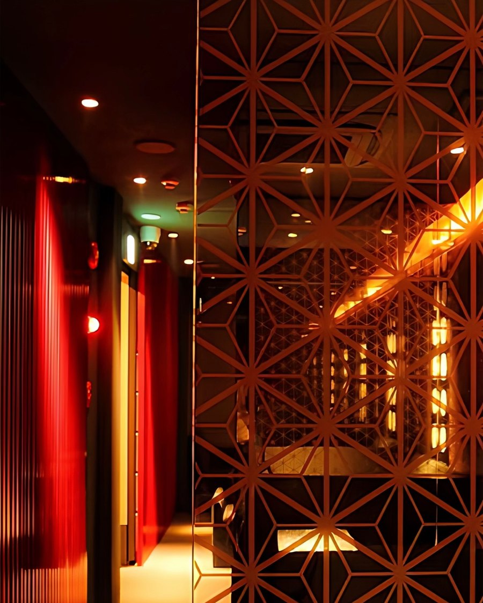
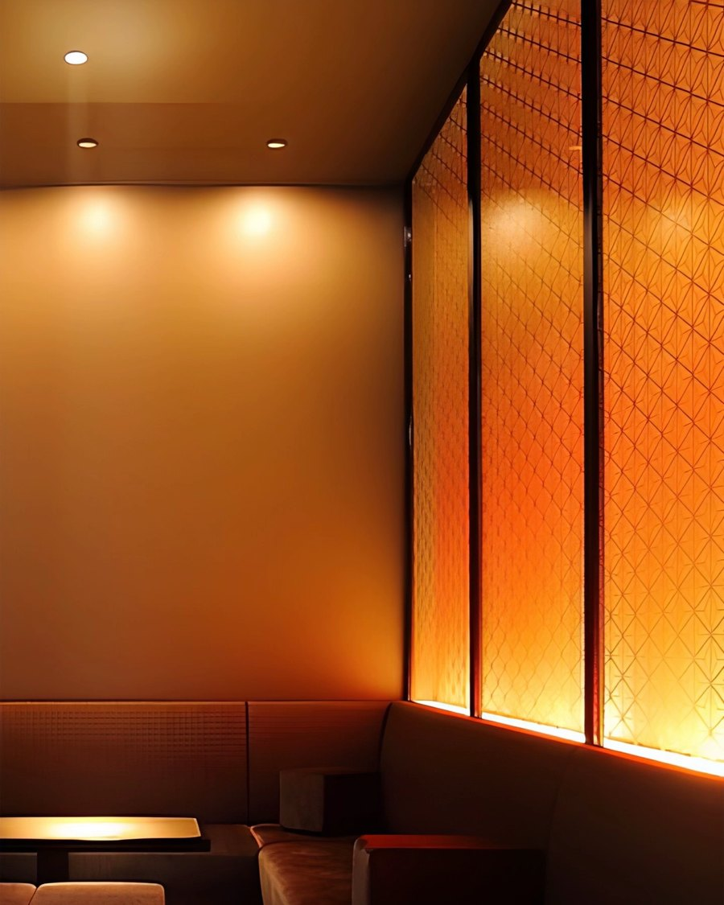
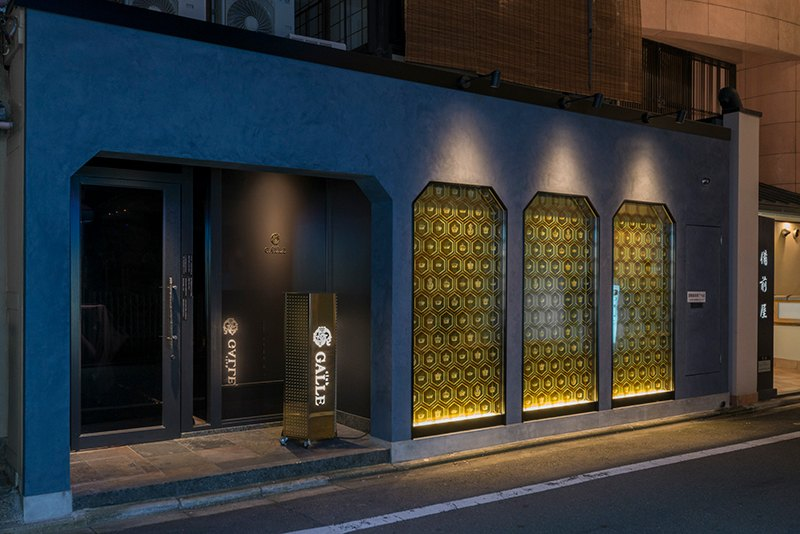
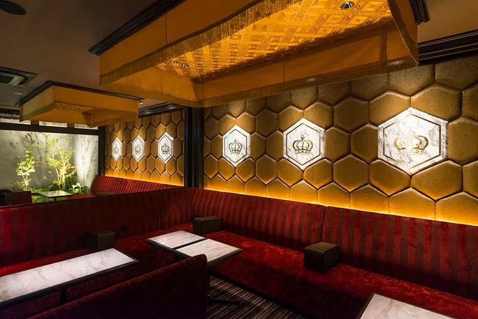
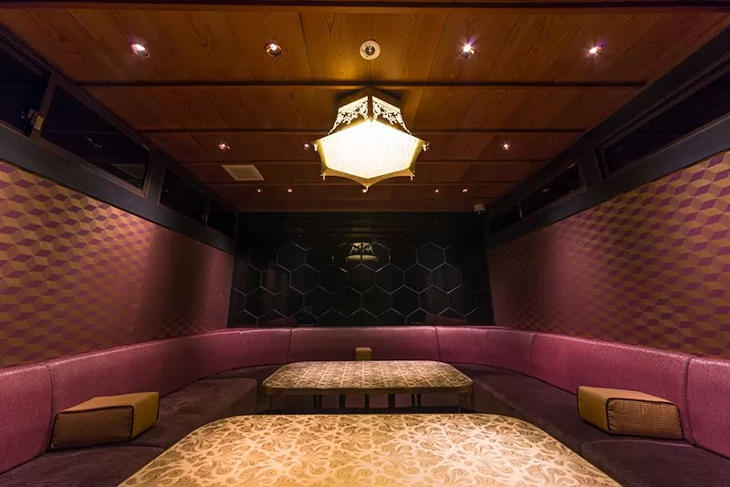
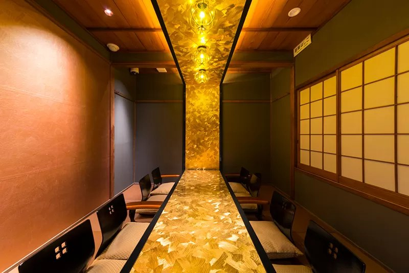

祇園でキャバクラを探すなら知っておきたい4店
Area 編集部

京都いちばんの繁華街・祇園。花街の風情が残る街並みに、上質なお客様が集まるエリアです。ここでは、いま祇園でキャバクラのお仕事を探している人にぜひ知ってほしい4店を、時給や待遇、向いている人でくらべながら紹介します。
4店をひと目でくらべる
| 華小町 | Club UNJOUR 祇園 | GALLE | MILANO | |
|---|---|---|---|---|
| 時給 | 8,000円〜 | 8,000円〜 | 4,000円〜 | 8,000円〜 |
| 日払い | OK | 体入は全額 入店後7割まで | 体入は全額 入店後7割まで | 体入は全額 入店後もOK |
| 保証 | — | — | 入店から2か月 | 保証制度あり |
| ヘアメイク | 専属スタイリスト | お店でOK | 各自 | 確認中 |
| 寮 | あり | なし | なし | あり |
| 営業時間 | 19:00〜LAST | 20:00〜翌1:00 | 20:00〜翌1:00 | 19:00〜LAST |
| 応募資格 | 18歳以上 | 18歳以上 | 19歳以上 | 18歳以上 |
※高校生は応募できません。2026年11月1日時点の情報です。
1. 華小町（はなこまち）
華小町
京都市東山区富永町／京阪「祇園四条駅」徒歩3分
時給 8,000円〜京都・祇園で最大級のフロア面積をほこる大型店。地下1階から地上3階までの4フロアに、テーブル33卓と個室7部屋（うちVIPルーム2部屋）。築130年以上の京町家をリノベーションした店内は、祇園のデザイナーズキャバクラとして評判です。
- 体験入店から時給8,000円〜。経験者は面談のうえでさらに優遇
- 新作やブランドのドレスを無料で借りられて、専属のヘアメイクも在籍。手ぶらで体験入店できる
- 週1日〜OK・終電上がりOK・日払いOK・寮あり
- 接待で使われることが多く、VIPのお客様が多い
こんな人に：はじめてでも高時給でスタートしたい人、毎日の準備をお店に任せたい人
華小町の求人を見る ›2. Club UNJOUR 祇園（アンジュール）
Club UNJOUR 祇園
京都市東山区末吉町／京阪「祇園四条駅」徒歩3分
時給 8,000円〜


華小町・MILANOと同じカイザーグループの、「UNJOUR」の祇園店。北新地にも系列店があります。知名度が高く新規のお客様が多いうえ、VIPクラスのお客様も多く、売上が時給やお給料に反映されやすいお店です。
- 体験入店から時給8,000円〜。随時昇給あり
- 体験入店の日は全額日払い。入店後も1日のお給料の7割まで日払いできる
- ヘアメイクはお店の中でできるので、出勤前の準備がラク
- 同伴バック5,000円・ボトルバック10%。ノルマなし
- 0時以降は送りあり（滋賀県・大阪府まで）
こんな人に：高時給ですぐにお給料を受け取りたい人、上質なお客様の多いお店で売上をのばしたい人
Club UNJOUR 祇園の求人を見る ›3. GALLE（ガレ）
GALLE
祇園／京阪「祇園四条駅」




もともとクラブだったお店で、客層の良さが自慢のキャバクラ。金の亀甲柄が光る外観に、王冠のエンブレムや金箔のカウンター、和の個室など、こだわりの空間がそろっています。
- 入店から2か月の保証つき。お客様がまだいない時期も安心
- 売上スライド制で、売上に合わせて時給アップ。ノルマなし
- 体験入店の日は全額日払い。入店後も7割まで日払い可能
- 送りあり（0時〜4時ごろ・滋賀県・大阪府まで）
こんな人に：落ち着いた客層のお店で、保証を受けながら始めたい人
GALLEの求人を見る ›4. MILANO（ミラノ）
MILANO
京都市東山区清本町 花見小路ビル2F／京阪「祇園四条駅」徒歩5分
時給 8,000円〜華小町・Club UNJOUR 祇園と同じカイザーグループのニュークラブ。上下関係なし・ノルマなしで、ゆるく楽しく高収入をめざせるお店です。
- 体験入店から時給8,000円で全額日払い。1日4時間で日給32,000円
- 本入店後も時給8,000円〜＋各種バック。保証制度・時給スライド制あり
- ノルマ・ペナルティ・待機カットなし。体験入店は何度でもOK、お友達と一緒の応募も歓迎
- 提携の単身寮（すぐ入居OK）、専属マネージャー、託児所、美容クリニックの優待、資格取得支援など福利厚生が充実
- 面接の交通費は1,000円まで支給。レンタルドレス多数、プロのメイクスタッフもサポート
- 終電上がりOK、終電後は広い範囲で送りあり
こんな人に：未経験から高時給で始めたい人、お友達と一緒に働きたい人、ノルマのない環境で働きたい人
MILANOの求人を見る ›祇園で働くときに知っておきたいこと
- 終電の時間：京阪・阪急の終電は0時台。終電で帰りたい人は、終電上がりOKのお店を選ぶか、送りの範囲と料金を確認しておきましょう。
- お給料の受け取り方：全額日払いか、一部日払い＋月払いかはお店によって違います。面接で必ず確認を。
- ドレスとヘアメイク：レンタルやヘアメイクがお店にあると、準備の時間とお金が浮きます。
まとめ
高時給と大型店の華やかさなら華小町、未経験から高時給・ノルマなしならMILANO、上質なお客様と日払い・ヘアメイクのラクさならClub UNJOUR 祇園、保証と落ち着いた客層ならGALLE。迷ったら、まずは体験入店で雰囲気をくらべてみるのがおすすめです。
祇園の求人は、エリアページでまとめて見られます。
祇園の求人を見る※この記事は、お店から提供された情報をもとに、Area編集部がまとめたものです（2026年11月1日時点）。時給や保証などの条件は、面接のときに必ずお店へ直接ご確認ください。18歳未満の方・高校生の方は応募できません。Areaは求人広告の媒体で、お仕事の紹介・あっせんは行っていません。